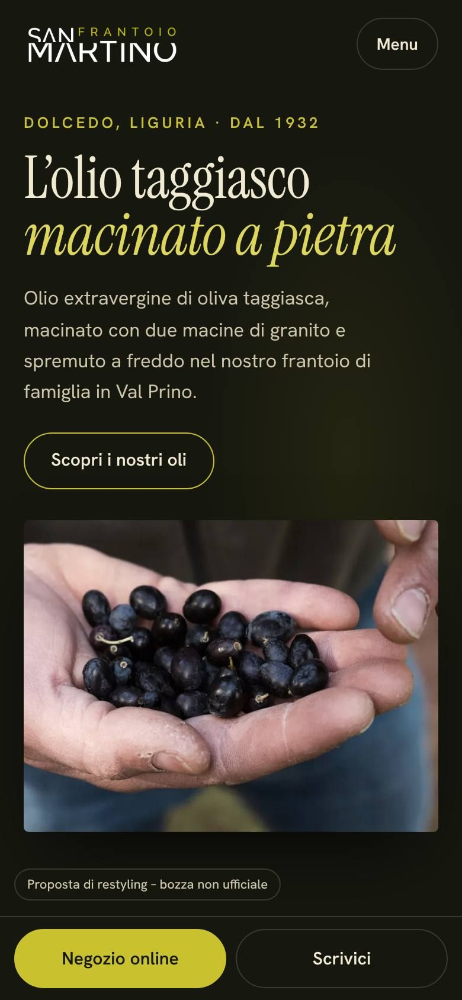
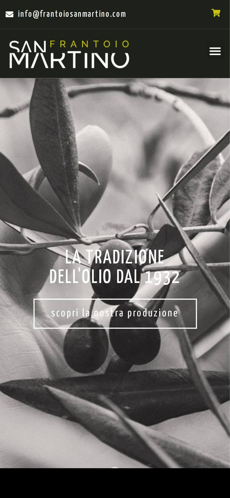
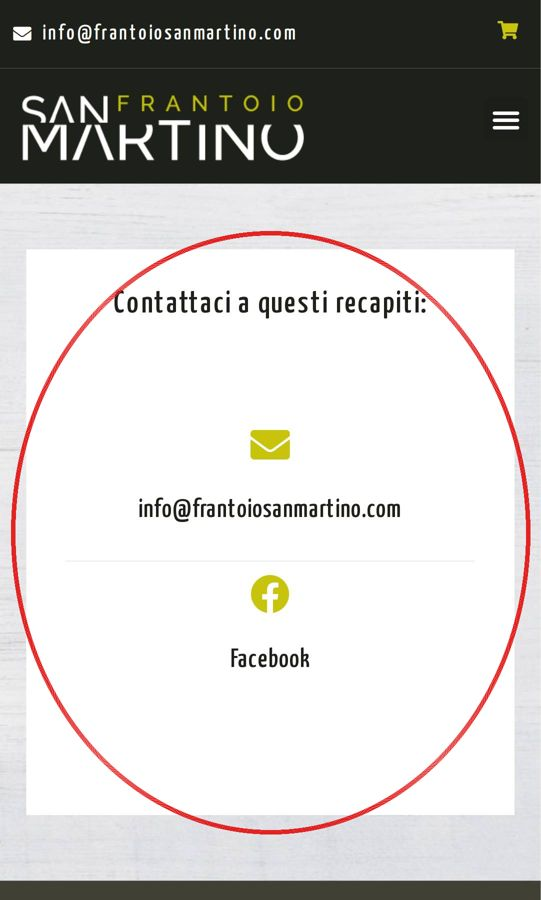
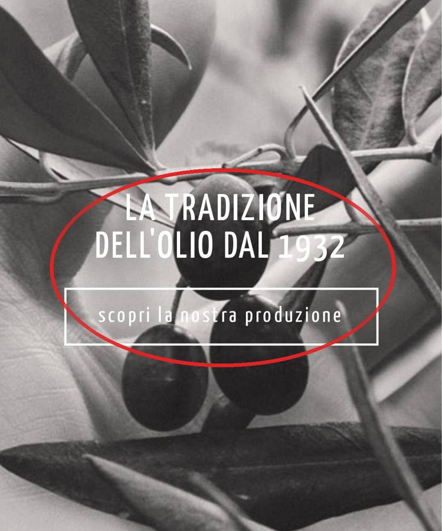
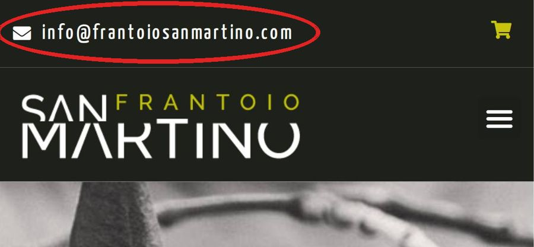

Frantoio San Martino · Dolcedo
Come appare oggi frantoiosanmartino.com dal telefono, e come potrebbe essere. Trascinate il cursore.
Proposta di restyling – bozza non ufficiale

OggiPropostaA sinistra il sito di oggi, a destra la proposta.

Sotto “Contattaci a questi recapiti:” ci sono solo l’email e il link a Facebook. Nessun numero, nessun indirizzo, nessun orario, nessun modulo da compilare.

E quando arriva mostra una foto in bianco e nero, il titolo e “scopri la nostra produzione”: nessun olio, nessun prodotto del negozio.

Nel codice della pagina il collegamento è “mailto:%20info@frantoiosanmartino.com”: davanti all’indirizzo c’è uno spazio codificato (%20).
Misure fatte il 28 ottobre 2026 con lo stesso strumento per entrambe le pagine: telefono simulato, cache vuota.